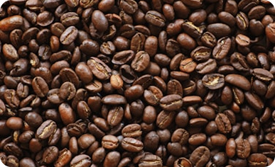
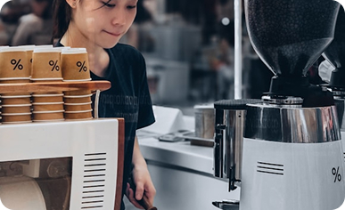
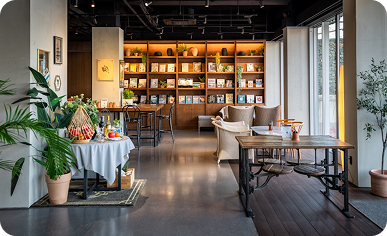
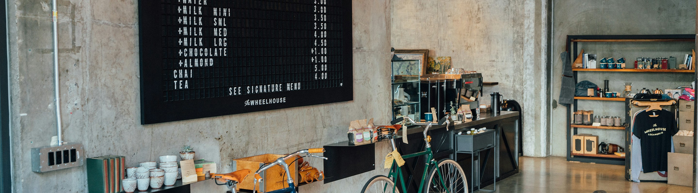

Everyday
Elevated
MORVA는
합리적인 가격 속에서도 절대 타협하지 않는 맛과 경험을 추구합니다.
-
High Quality Beans
고품질 원두 사용
단순히 ‘좋은 원두’가 아니라,최적의 밸런스를 가진 원두를 선별합니다.

 산미와 바디감의 조화
산미와 바디감의 조화- 누구나 부담 없이 마실 수 있는 로스팅
- 시즌별 원두 블렌딩 최적화
MORVA는 화려한 스펙보다꾸준히 맛있는 한 잔을 더 중요하게 생각합니다.매장에서의 맛 편차를 최소화하기 위해블렌딩과 로스팅 프로파일을 표준화하여어디서 마셔도 같은 경험을 제공합니다.
-
Fast but Warm Service
빠르지만 따뜻한 서비스
저가형 커피 브랜드에서 속도는 경쟁력입니다. 하지만 MORVA는 속도만을 추구하지 않습니다.

- 효율적인 제조 동선 설계
- 명확한 메뉴 구조
- 친절한 한마디 인사
우리는 “빨리 나오는 커피”가 아니라기분 좋게 받는 커피를 목표로 합니다. 짧은 순간이지만, 고객이 브랜드를 기억하는 이유는 서비스의 온도라고 믿습니다.
-
Minimal but Memorable Space
미니멀하지만 기억에 남는 공간
공간은 화려하지 않아도 됩니다. 대신 브랜드의 톤앤매너는 분명해야 합니다.

- 절제된 컬러 사용
- 직관적인 동선 구조
- 사진이 잘 나오는 포인트존
MORVA는 과한 인테리어 대신 브랜드 컬러와 로고, 조명만으로도 충분히 인상적인 분위기를 만듭니다. 머물지 않아도 기억나는 공간, 그것이 MORVA가 설계하는 브랜드 경험입니다.
Our Signature Identity
Taste That Stays
기억에 남는 건, 가격이 아니라 맛입니다.

Pure.
Clean.
Balanced.
MORVA의 시그니처는 단순합니다.과하지 않은 로스팅, 깔끔한 바디감,누구에게나 편안한 밸런스.
MORVA의 시그니처는 단순합니다.과하지 않은 로스팅, 깔끔한 바디감, 누구에게나 편안한 밸런스.첫 모금은 부드럽게, 마지막 한 모금은 산뜻하게 마무리됩니다.매일 마셔도 질리지 않는 맛, 그것이 MORVA가 지향하는 기준입니다.
MORVA는 자극적인 맛보다 균형을 선택합니다.강함으로 기억되기보다, 편안함으로 남기를 바랍니다.산미와 고소함, 쌉싸름함이 자연스럽게 어우러져누구의 하루에도 무리 없이 스며드는 커피를 완성합니다.
우리는 유행하는 트렌드를 따라가기보다오래 사랑받을 수 있는 기본에 집중합니다.복잡한 설명 없이도 “맛있다”는 말이 나오는 한 잔,그 단순함 속에서 MORVA의 정체성이 완성됩니다.